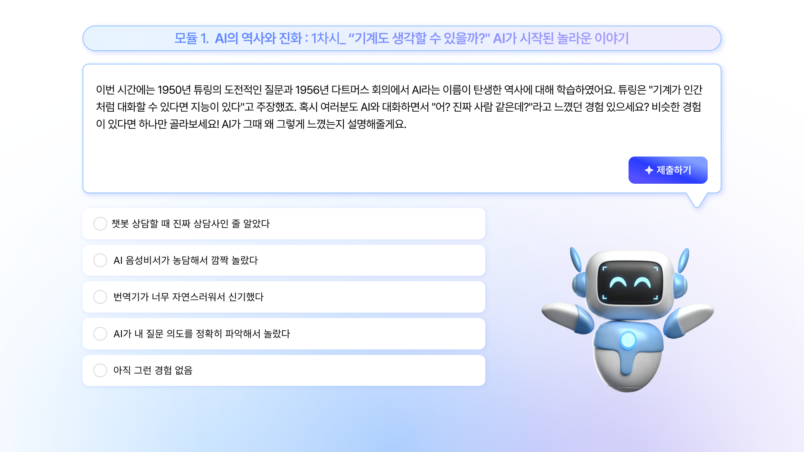
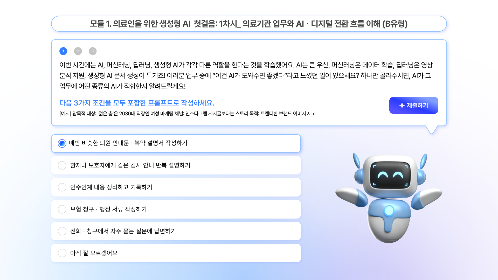
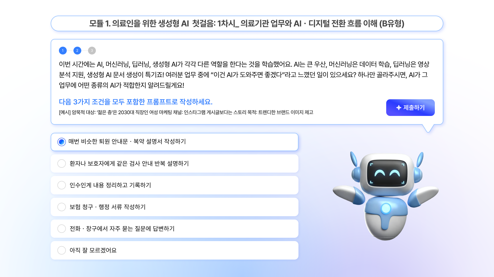
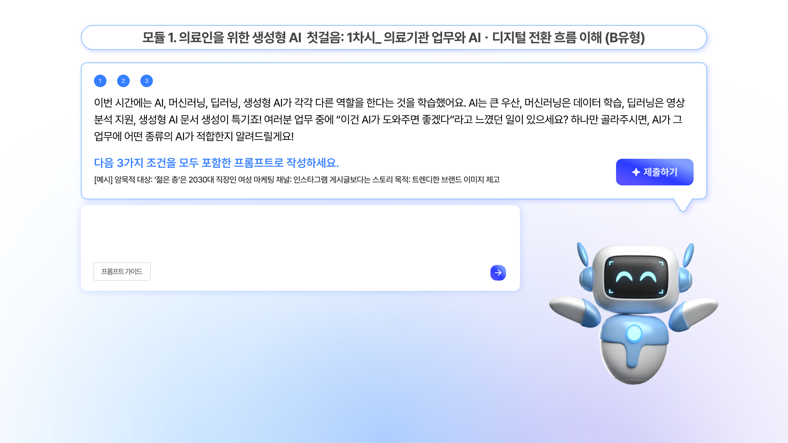
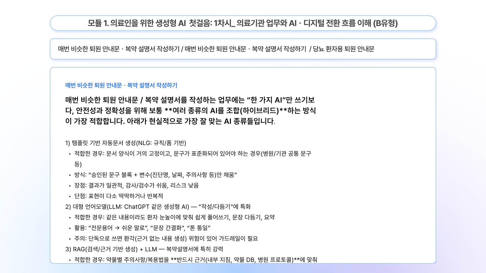

아이넥스는 AI 실무 역량을 다루는 "AI특화과정" 콘텐츠를 새로 제작하면서, 강의 중간중간에 실무 테스트를 넣기로 했다. 이론만 전달하고 끝나는 강의가 아니라, 배운 내용을 바로 적용해보는 구간이 필요했다.
AI를 가르치는 과정이라면, 테스트를 치르는 방식도 AI다워야 했다.

강의 중간에 들어가는 실무 테스트를 어떤 형태로 만들지가 관건이었다. AI를 활용해 학생이 부담 없이, 그리고 직접 답을 입력해보는 방식으로 테스트를 설계하기로 했다.
질문(퀘스트)이 나오는 영역과 학생이 답을 적는 입력 영역, AI 피드백이 나오는 영역을 한 화면 안에서 어떻게 배치할지가 첫 번째 난관이었다.
질문과 답변, 피드백이 쌓이면서 화면이 길어지는 대화형 특성상, 스크롤이 길어져도 지금 어떤 질문에 답하고 있는지 놓치지 않아야 했다.
대화형 인터페이스 안에서 AI가 묻는 질문(퀘스트), 학생이 답을 적는 입력창, AI의 피드백이 각각 명확히 구분되도록 화면을 설계했다.



일반적인 화면 UI보다 먼저 AI-학생 간 대화가 어떤 순서로 오가야 하는지부터 정의했다. 그 흐름 위에 질문·입력·피드백 컴포넌트를 얹는 방식으로 작업했다.
질문과 답변, 피드백이 한 화면 안에서 순서대로 쌓이는 구조다 보니, 각 영역에 얼마만큼의 공간을 내줄지가 생각보다 까다로운 문제였다. 스페이스 배분이 애매하면 지금 무엇을 해야 하는지 헷갈리는 화면이 됐다.
역할이 다른 세 영역(질문 · 입력 · 피드백)을 명확히 나누고 나서야, 학생이 헤매지 않고 테스트에 집중할 수 있는 화면이 됐다.
학생은 강의를 듣다가 실무 테스트 구간에서 AI가 던지는 질문에 답하고, 곧바로 피드백을 받는다.
